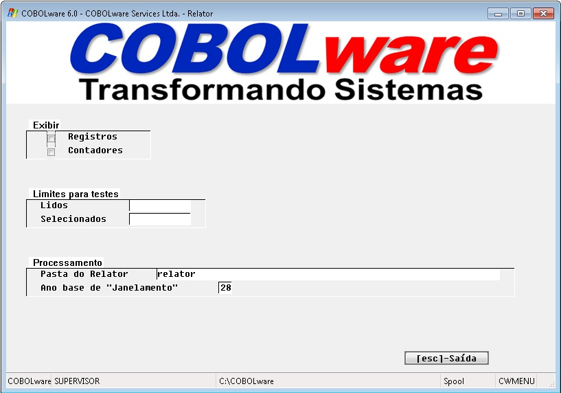
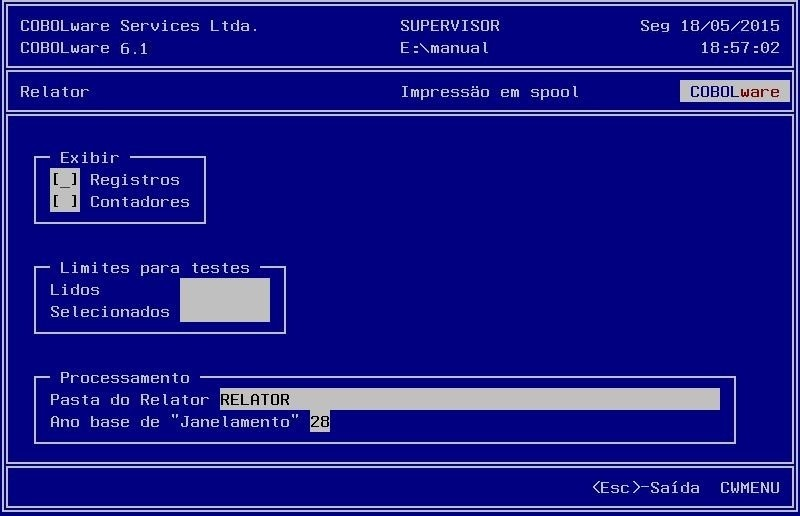

Opções do Relator.
|
Modo gráfico |
|
 |
|
Modo texto |
|
 |
Exibir Registros/Contadores
Habilita a exibição das informações fornecidas pelo provedor, e/ou habilita a exibição dos contadores de registros lidos, selecionados e impressos. Tem efeito somente no modo texto.
Limites para testes Lidos/Selecionados
Estabelece um número máximo de registros lidos e/ou
selecionados para reduzir o tempo de testes para
desenvolvedores de relatórios. Tem efeito apenas para o
usuário corrente.
Pasta do
Relator
Estabelece em qual pasta devem ser armazenados
os dicionários de dados e as definições de
relatórios.
Ano base de
"Janelamento"
Define a fronteira de
complementação para datas. Se num campo de data forem
reservados apenas 2 dígitos para
o ano, este atributo orienta o Relator
a partir de qual valor o ano deve ser tratado como 1900.
No caso, preenchido com 28, os valores
de 00 a 27
serão considerados como de 2000 a
2027 e os valores de 28
a 99 como de 1928
a 1999.